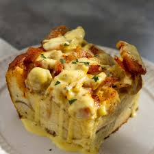

Eggs-Benedict-Casserole

Overnight Eggs Benedict! Easy to make ahead, perfect for brunch or a special occasion or overnight house guests.
Ingreddients
- cooking spray
- 8 Large eggs
- 2 cups of milk
- 3 green onions,chopped
- 1 teaspoon onion powder
- 1 teaspoon salt
- 3/4 poind Canadian bacon,cut into 1/2-inch dice
- 6 English muffins,cut into 1/2-inch dice
- 1/2 teaspoon paprika
- 1(.9 ounce) package hollandaise sauce mix
- 1 cup milk
- 1/4 cup margarine